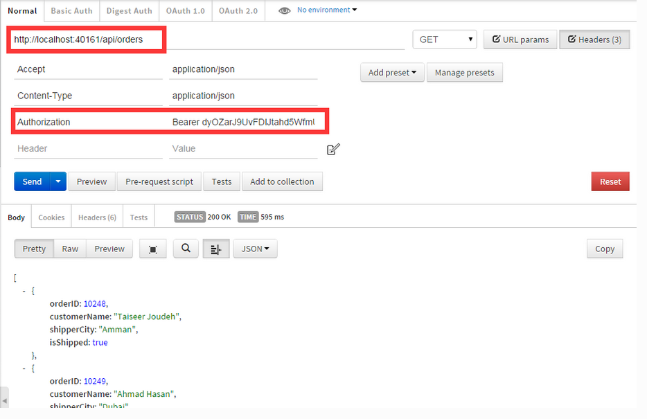

使用ASP.NET Web API 2、Owin和Identity来创建Token认证(1)
0. 简介
0.1 Token认证
0.2 Web API
1. 创建后端API
1.1 第一步 创建Web API项目
使用VS2013，创建"ASP.NET Web应用程序"，解决方案名为AngularJSAuthentication，项目名为AngularJSAuthentication.API:

1.2 第二步 安装必要的NuGet包
Install-Package Microsoft.AspNet.WebApi.Owin -Version 5.1.2
Install-Package Microsoft.Owin.Host.SystemWeb -Version 2.1.0
其中，Microsoft.Owin.Host.SystemWeb包是用来Owin服务器的API能够在IIS上运行
1.3 第三步 添加Owin"启动(Startup)"类
右键，添加新类Startup，我们会修改好几次这个类，现在它应该是这个样子：
using System.Web.Http;
using AngularJSAuthentication.API;
using Microsoft.Owin;
using Owin;
[assembly: OwinStartup(typeof (Startup))]
namespace AngularJSAuthentication.API
{
public class Startup
{
public void Configuration(IAppBuilder app)
{
var config = new HttpConfiguration();
WebApiConfig.Register(config);
app.UseWebApi(config);
}
}
}
assembly属性声明了启动时启动的类，也就是说Startup类在应用启动的时候会被调用。Configuration方法接收的参数IAppBuilder实例app是主机传过来的。app是一个接口，用来组成我们服务器的应用。
HttpConfiguration对象用来配置路由，因此，我们把它传递给WebApiConfig类的Register方法。
最后，我们把config对象传递给UserWebApi扩展方法，实现ASP.NET Web API和Owin Server的管道。
通常，WebApiConfig由模板自动生成。如果没有，就在App_Start文件夹下创建：
public static class WebApiConfig
{
public static void Register(HttpConfiguration config)
{
// Web API routes
config.MapHttpAttributeRoutes();
config.Routes.MapHttpRoute(
name: "DefaultApi",
routeTemplate: "api/{controller}/{id}",
defaults: new { id = RouteParameter.Optional }
);
var jsonFormatter = config.Formatters.OfType<JsonMediaTypeFormatter>().First();
jsonFormatter.SerializerSettings.ContractResolver = new CamelCasePropertyNamesContractResolver();
}
}
1.4 第四步 删除Global.asax类
不再需要这个类，也不需要Application_Start事件，因为我们已经配置了Startup类，所以放心删除它吧。
1.5 第五步 添加Windows Identity System(Windows身份认证系统)
配置过Web API后，现在可以添加支持注册和验证用户的包了，安装如下包
Install-Package Microsoft.AspNet.Identity.Owin -Version 2.0.1
Install-Package Microsoft.AspNet.Identity.EntityFramework -Version 2.0.1
第一个包用来支持ASP.NET Identity Owin，第二个包可以让ASP.NET Identity使用Entity Framework,这样我们就能保存用户到SQL Server数据库了。
现在我们需要添加一个Database context类，用来负责与数据库交互。因此，添加AuthContext类：
public class AuthContext: IdentityDbContext<IdentityUser>
{
public AuthContext(): base("AuthContext")
{
}
}
能看到这个类继承自IdentityDbContext类。可以把这个特殊类型的DbContext类。它支持所有Entity Framework的code-first映射，以及DbSet属性用来管理数据库的身份表。可以读Scott Allen的博客了解更多。
现在，我们在Models文件夹下添加一个UserModel类，它包含一些用来验证注册请求。
using System.ComponentModel.DataAnnotations;
namespace AngularJSAuthentication.API.Models
{
public class UserModel
{
[Required]
[Display(Name = "用户名")]
public string UserName { get; set; }
[Required]
[StringLength(100, ErrorMessage = "{0}至少要有{2}个字符", MinimumLength = 6)]
[DataType(DataType.Password)]
[Display(Name = "密码")]
public string Password { get; set; }
[DataType(DataType.Password)]
[Display(Name = "确认密码")]
[Compare("Password", ErrorMessage = "两次密码输入不一致")]
public string ConfirmedPassword { get; set; }
}
}
最后，我们在web.config中添加连接字符串：
<connectionStrings>
<add name="AuthContext" connectionString="Data Source=.;Initial Catalog=AngularJSAuth;Integrated Security=SSPI;" providerName="System.Data.SqlClient"/>
</connectionStrings>
1.6 第六步 添加仓库类来支持ASP.NET Identity System
现在，我们要实现两个方法RegisterUser和FindUser，因此，我们添加一个名为AuthRepository的类：
public class AuthRepository : IDisposable
{
private readonly AuthContext _ctx;
private readonly UserManager<IdentityUser> _userManager;
public AuthRepository()
{
_ctx = new AuthContext();
_userManager = new UserManager<IdentityUser>(new UserStore<IdentityUser>(_ctx));
}
public void Dispose()
{
_ctx.Dispose();
_userManager.Dispose();
}
public async Task<IdentityResult> RegisterUser(UserModel userModel)
{
var user = new IdentityUser
{
UserName = userModel.UserName
};
IdentityResult result = await _userManager.CreateAsync(user, userModel.Password);
return result;
}
public async Task<IdentityUser> FindUser(string username, string password)
{
IdentityUser user = await _userManager.FindAsync(username, password);
return user;
}
}
我们依赖UserManager来提供用户信息的逻辑操作。UserManager指导什么时候hash密码，怎么以及何时验证用户，以及如何管理请求。读ASP.NET Identity System来了解更多。
1.7 第七步 添加我们的“账户”控制器("Account" Controller)
现在是时候添加我们的第一个Web API控制器了，这个控制器用来注册新用户。在Controllers文件夹下添加一个空Web API 2的控制器AccountController：
[RoutePrefix("api/account")]
public class AccountController : ApiController
{
private AuthRepository _repo = null;
public AccountController()
{
_repo = new AuthRepository();
}
//POST /api/Acount/Register
[AllowAnonymous]
[Route("Register")]
public async Task<IHttpActionResult> Register(UserModel userModel)
{
if (!ModelState.IsValid)
{
return BadRequest(ModelState);
}
IdentityResult result = await _repo.RegisterUser(userModel);
IHttpActionResult errorResult = GetErrorResult(result);
if (errorResult != null)
{
return errorResult;
}
return Ok();
}
protected override void Dispose(bool disposing)
{
if (disposing)
{
_repo.Dispose();
}
base.Dispose(disposing);
}
private IHttpActionResult GetErrorResult(IdentityResult result)
{
if (result == null)
{
return InternalServerError();
}
if (!result.Succeeded)
{
if (result.Errors != null)
{
foreach (var error in result.Errors)
{
ModelState.AddModelError("", error);
}
}
if (ModelState.IsValid)
{
return BadRequest();
}
return BadRequest(ModelState);
}
return null;
}
}
任何人想要注册，必须使用HTTP POST请求'/api/account/register'，而且请求必须包含如下的JSON对象：
{
"userName": "liu",
"password": "123456",
"confirmPassword": "123456"
}
现在可以使用HTTP POST请求网址：“http://localhost:port/api/account/register”，如果一切正常就会收到HTTP状态码200，而且数据库会自动在表dbo.AspNetUsers中创建一个用户。
注意：通过HTTPS发送POST请求非常重要，因为敏感信息会被加密。
GetErrorResult方法是一个帮助方法用来验证UserModel，并且返回相应的HTTP状态码。
1.8 第八步 添加具有安全保护的“订单”控制器(Order Controller)
现在我们想要添加控制器来处理我们的订单，我们设定这个控制器为认证用户返回订单，为了保持简单我们返回静态数据。因此在Controllers下添加一个OrdersController：
[RoutePrefix("api/Orders")]
public class OrdersController : ApiController
{
// GET api/<controller>
[Authorize]
[Route("")]
public IHttpActionResult Get()
{
return Ok(Order.CreateOrders());
}
#region Helpers
public class Order
{
public int OrderID { get; set; }
public string CustomerName { get; set; }
public string ShipperCity { get; set; }
public Boolean IsShipped { get; set; }
public static List<Order> CreateOrders()
{
var OrderList = new List<Order>
{
new Order {OrderID = 10248, CustomerName = "Taiseer Joudeh", ShipperCity = "Amman", IsShipped = true },
new Order {OrderID = 10249, CustomerName = "Ahmad Hasan", ShipperCity = "Dubai", IsShipped = false},
new Order {OrderID = 10250,CustomerName = "Tamer Yaser", ShipperCity = "Jeddah", IsShipped = false },
new Order {OrderID = 10251,CustomerName = "Lina Majed", ShipperCity = "Abu Dhabi", IsShipped = false},
new Order {OrderID = 10252,CustomerName = "Yasmeen Rami", ShipperCity = "Kuwait", IsShipped = true}
};
return OrderList;
}
}
#endregion
}
注意我们在Get上加了一个Authorize属性，此时，如果访问 “http://localhost:port/api/orders”就会收到401未授权状态码。因为我们的请求当中并没有包含授权头信息。
1.9 第九步 添加支持OAuth Token生成功能
现在我们该让API增加OAuth功能
Install-Package Microsoft.Owin.Security.OAuth -Version 2.1.0
打开Startup类，添加ConfigureOAuth方法，并在Configuration方法的第一行调用它：
public class Startup
{
public void Configuration(IAppBuilder app)
{
var config = new HttpConfiguration();
WebApiConfig.Register(config);
app.UseWebApi(config);
}
public void ConfigreOAuth(IAppBuilder app)
{
var oauthServerOptions = new OAuthAuthorizationServerOptions
{
AllowInsecureHttp = true,
TokenEndpointPath = new PathString("/token"),
AccessTokenExpireTimeSpan = TimeSpan.FromDays(1),
Provider = new SimpleAuthorizationServerProvider()
};
app.UseOAuthAuthorizationServer(oauthServerOptions);
app.UseOAuthBearerAuthentication(new OAuthBearerAuthenticationOptions());
}
}
我们创建了一个OAuthAuthorizationServerOptions类的实例，并且设置了如下的一些选项：
- 产生令牌的路径
http://localhost:port/token。后面我们会看到如何使用HTTP POST请求产生令牌 - 令牌24小时过期
- 我们指明如何验证用户的凭据，来返回令牌，就是使用后面我们要定义的一个类
SimpleAuthorizationServerProvider
然后将选项实例传递给扩展方法UseOAuthAuthorizationServer，这样我们就将认证中间件添加到了管道当中去了。
1.10 第十步 实现"SimpleAuthorizationServerProvider"类
创建一个Providers文件夹，然后添加一个SimpleAuthorizationServerProvider类：
public class SimpleAuthorizationServerProvider: OAuthAuthorizationServerProvider
{
public override async Task ValidateClientAuthentication(OAuthValidateClientAuthenticationContext context)
{
context.Validated();
}
public override async Task GrantResourceOwnerCredentials(OAuthGrantResourceOwnerCredentialsContext context)
{
context.OwinContext.Response.Headers.Add("Access-Control-Allow-Origin", new []{"*"});
using (var _repo = new AuthRepository())
{
IdentityUser user = await _repo.FindUser(context.UserName, context.Password);
if (user == null)
{
context.SetError("invalid_grant", "用户名或者密码不正确");
return;
}
var identity = new ClaimsIdentity(context.Options.AuthenticationType);
identity.AddClaim(new Claim("sub", context.UserName));
identity.AddClaim(new Claim("role", "user"));
context.Validated(identity);
}
}
}
该类继承自OAuthAuthorizationServerProvider，我们重写了两个方法，第一个是用来验证客户端的。本例中我们只有一个客户端，因此永远验证成功。
第二个方法GrantResourceOwnerCredentials负责验证发送给认证服务器令牌端的用户名和密码。
如果认证成功，我们创建一个ClaimsIdentity类，并且传递认证类型给它。然后添加两个请求(sub和role)，他们会被包含在签名令牌中。也可以添加别的,但是会增加令牌的大小。
最后使用context.Validate(identity)生成令牌。
为了让令牌中间件提供者允许CORS，我们需要添加头"Access-Control-Allow-Origin"到Owin的上下文中。如果忘记这么做，从浏览器中调用生成令牌就会失败。
1.11 第十一步 允许ASP.NET Web API支持CORS
首先，需要安装对应的NuGet包：
Install-Package Microsoft.Owin.Cors
然后再次打开类Startup，并添加
public void Configuration(IAppBuilder app)
{
var config = new HttpConfiguration();
ConfigreOAuth(app);
WebApiConfig.Register(config);
//添加这行
app.UseCors(CorsOptions.AllowAll);
app.UseWebApi(config);
}
1.12 第十二步 测试后端API

注意，content-type和payload type都是"x-www-form-urlencoded"类型，因此payload body将是form(grant_type=password&username="liulx"&password="123456")。如果一切正常我们会在响应中收到一个签名令牌。
"grant_type"指明授权类型，此处是密码。
现在既然有了token，我们就可以访问安全数据/api/Orders了：
